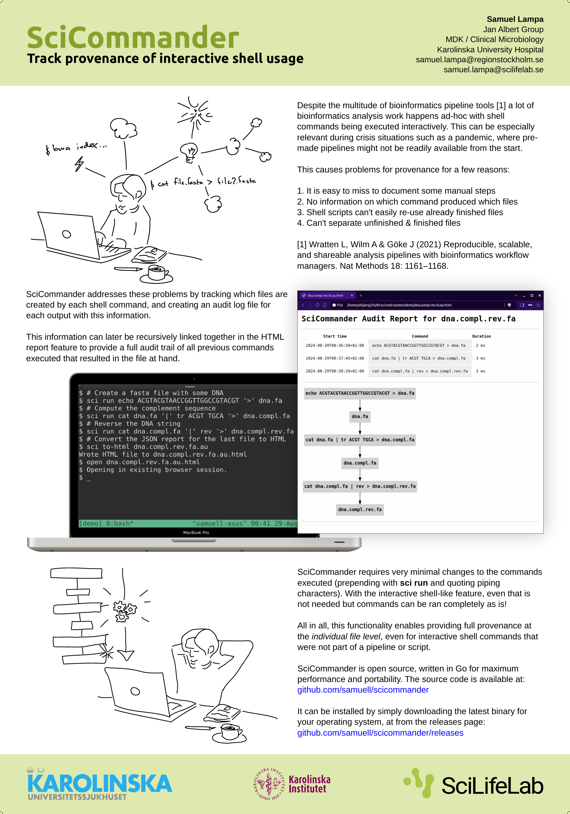

Rewrite of Scicommander in Go with much improved algorithm
By Samuel onWhen I presented a poster about SciCommander at the Swedish bioinformatics workshop last year, I got a lot of awesome feedback from some great people including Fredrik Boulund, Johannes Alneberg and others, of which I unfortunately lost the names (please shout out if you read this!).
(For those new to SciCommander, it is my attempt at creating a tool that can track complete provenance reports also for ad-hoc shell commands, not just those included in a pipeline. The grand plan is also to integrate this provenance tracking with those of popular pipelines, to enable seamless provenance report generation across pipelines and ad-hoc commands).
Anyways, the discussions we had at SBW lead to an idea for a much improved approach for detecting input- and output files, that I have now finally had time to implement. This means that now, no extra syntax at all is needed to mark inputs and outputs. It is all auto-detected!
The only thing required is to somehow run the command via SciCommander. This can be done in one of two ways:
- Prepend the command with
sci run. If doing this, you must also either quote the entire command after these commands, or quote each piping character such as|or>. This is so that bash doesn’t capture those instead of sending them as parameters tosci run. - The alternative is to start a fake shell with
sci shell. Here you can write your commands completely as you would in normal bash! You even have auto-completion for files in the current folder, programs available in your$PATHetc. The only caveat is that this is not really a real shell, meaning that some things are missing, such as command history. I’ll continue to look for ways to improve this situation, but think this works as a start.
As a side-note, while implementing the improved version, I at the same time rewrote the whole app in Go instead of Python. This should make SciCommmander much less likely to cause problems with existing python environments, as it is now shipped as a completely stand-alone binary. It will also make sure that commands are always super-snappy, even if we add more complex logic in the future.
I had the pleasure to present the updated SciCommander version as an updated poster at the Pandemic Laboratory Preparedness retreat last week. The tool makes particular sense in this context since it has the potential to let you keep full provenance and audit tracing of your analyses even when you didn’t have time to create a well defined pipeline for it. Something that can be particularly important in crisis situations such as pandemics.
I hope to present it at some upcoming events more targeted towards bioinformaticians too, such as perhaps SBW2024 in Uppsala . Perhaps see you there!
Find a screenshot of the poster below:
